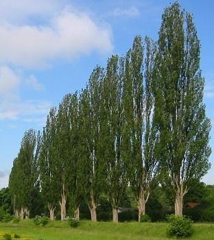
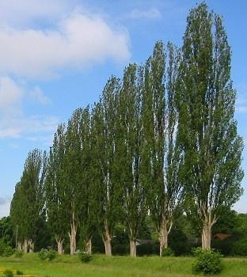

Wie wird die Schwarzpappel genutzt?

Das Holz der Schwarzpappel ist sehr leicht. Es wird zu Holzwolle und Streichhölzern verarbeitet.
Säulenförmige Schwarzpappeln werden oft an Straßen gepflanzt.
Diese Straßen nennen wir Pappelalleen.
Wie wird die Schwarzpappel genutzt?  | Das Holz der Schwarzpappel ist sehr leicht. Es wird zu Holzwolle und Streichhölzern verarbeitet. |